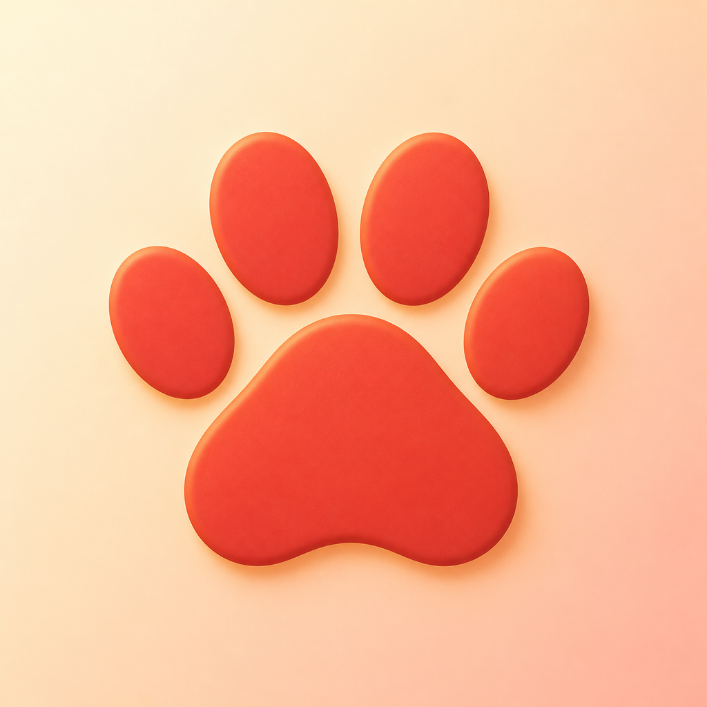

Entdecken
Hunde- und Katzenrassen mit Quellen und Informationen zu ihren allgemeinen Tendenzen kennenlernen.

PawferenceFür Hunde- und Katzenmenschen
Rassen entdecken, Vorlieben vergleichen und gemeinsame Favoriten finden. Allein oder zu zweit.
Support & FeedbackPawference ist eine iPhone-App für die gemeinsame Auswahl von Hunde- und Katzenrassen: allein, zu zweit auf einem Gerät oder per privater iCloud-Session. Es gibt keine Werbung, keine Käufe und keine Analyse-SDKs.
Hunde- und Katzenrassen mit Quellen und Informationen zu ihren allgemeinen Tendenzen kennenlernen.
Eigene Vorlieben bewerten, gespeicherte Ergebnisse vergleichen und beim Spiel „Kennst du meinen Geschmack?“ herausfinden, welche Rassen euch gemeinsam gefallen.
Favoriten als Ausgangspunkt für Gespräche und weitere Recherche nutzen.
Pawference ist eine spielerische Gesprächshilfe. Rasseprofile beschreiben belegte Tendenzen, keine Garantien für einzelne Tiere. Die Profilbilder sind KI-generierte Illustrationen. Pawference ersetzt keine persönliche, gesundheitliche oder rechtliche Beratung und ist weder eine Kauf- noch eine Eignungsempfehlung.